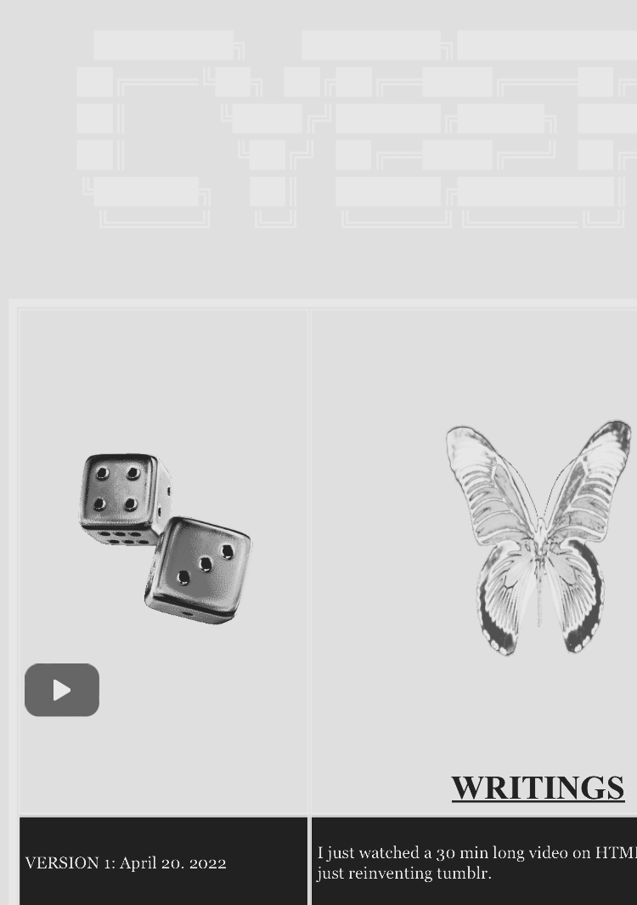
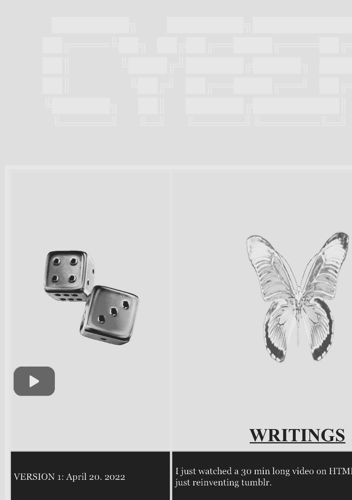

it occurred to me recently that websites can also be used to inform & instruct, i.e. not only to express my sadness. So i asked myself, why don't i create a page on my website explaining how to create a website? that way maybe other people will create blogs and share them with me.
Backstory
I started my blog back in 2022 when i was living abroad in Heidelberg. A lot of factors all came together (right place/right time) to allow for it's creation,1. Inspiration,
I was first inspired by this artist & writer named Issy Wood, she kept a daily blog (now deactivated) that she published into a book each year. Her writing was the perfect level of good but still in reach, making me think: I should do this ! maybe you have a similar feeling right now?I also was very inspired by playing Hypnospace Outlaw, it's a game where you enter this interconnected world of 90's websites, and i loved the idea of having a website with your own personality that could also reference other sites that you liked. The aesthetics of the game are also so ,, good.
2. I had a lot of time.
I suddenly had no job and only 2 2hr classes a week, if you want to set up a blog it will probably take a bit of time and dedication at the beginning but then it gets easier once everything is set up and looks mostly like you want.3. Some coding experience
I had confidence that i could make a website from knowing M (soon-to-be-retired programmer) and because i was coding a lot for my thesis project. BUT let me say -> You don't need coding experience to make a website, you only need to know how to search things. Also with ChatGPT you can probably just ask it to write a lot of the code for you.. you only need the confidence that you can figure out any problems you run into, which was the key part of programming that was never taught to me. i always thought coding was so complex because you needed to understand logically every aspect of what you were doing, and that programmers just knew what to write. Now i feel like programmers are just people who believe that they can code things, and after that they're at basically the same level of understanding as everyone else.How To Begin
I learned most of the basics from watching this video: HTML Tutorial - How to Make a Super Simple Website it's really good for explaining how to format text in html and seeing how the tags work.The first thing you want to do is download a text editor, i use Visual Studio Code because it looks pretty. i also love telling people that i do most of my writing in VS code because it's soo hot-hacker-girl
You'll do all of your writing in the text editor so download > open > and create a new text file.
Creating an HTML Page
You'll need to tell the text editor that you're about to make a webpage in html. Luckily it's very easy, just paste this block of text into your new file:The text is saying 'this is html' and giving information about how your site will be displayed. i always copy and paste this same thing into all of my pages to start. Then i make a 'body' section, this is where you'll put all of your text and everything you want on the page. You always have to close everything, that's why body is written twice and with the "/" the second time, also why it ends with /html.
Write some text in the body section and then save your file as 'index.html' this is vital !! Whatever page is saved as 'index' will be the page that your website opens to.
i played around with formatting and creating new pages, linking pages, for a long time before i actually started 'hosting' my site. At this point, you can view your site just by opening it wherever you saved it. Every time you save the html file in VS code, your site will update, just refresh the browser window.
You can just keep adding pages to your folder and building your website out from here. Just look up all the things your want to do and there's forum posts for everything. You can edit how the sections look by adding a 'style' tag:
This is how you edit the background, text color, and everything basically. You can also link your page to a 'CSS' page. This lets you edit the look of your page more easily once you get used to it, and do some things you can't in html. it lets you specify different styles of text for headers, body text, etc. and then just set that style to display when you want it.
Hosting Your Website
I host my website on github pages because it's free. The downside is that you have to make your page public so technically anyone can see all of your edits if they find your github account. i made a separate email for my github and prayed that this would never happen, but anyways,first, make a github account and download github desktop
this page walks you through creating a repository for your site select 'github desktop' and follow the instructions. eventually, you'll have a 'github' folder on your computer with the name of your repository inside. put your pages that you made (and everything you want displayed on your website, photos, music, etc.) in that folder.
once you have github desktop set up, you can just open the app and it should show you all the changes you made to your code. Then when you click publish, the changes will appear on your site at the github address. NOTE: you can also copy and paste your html files and photos, etc. directly into your github account without downloading the desktop app if you need to, i did this for a while before i figured out how to get it working.
at this point people can find your site! The only problem is the URL has your github repository name in it.
eventually i felt confident enough with coding to buy a URL and connect it to my github pages. This process was also really easy, i just used Namecheap and bought a URL i pay 17$ for annually. Namecheap (or whatever website you use) also had instructions for connecting the URL to your existing github repository. Also you should know that at first your URL will cost like 4$ but they raise the price to renew after the first year.
Making it Look Good
my first website looked...bad, and i went through many iterations before i coded this one.at some point you'll want to make your site also look good on phones. i'd already coded a lot before i tried doing this and it was kind of annoying. you'll need to create a CSS file for all of your pages and then create an option for loading on computers vs phones, then rewrite your code so that it works on a smaller screen. it's kind of complex so i would just look up ways to do this when you're ready. you can check how your website looks on phones by opening 'Developer Tools' in your browser and 'throttle' with smaller screen sizes.
when i decided to make my current site i spent a long time researching Windows 95 layouts. This old screenshot archive was very helpful.
here are some screenshots of my old blog versions:
StreeTrees Version 1:
☆ my blog was launched on github for the first time on April 21. 2022, i didn't even take a screenshot on my computer at the time so all i have is a few screenshots from my phone showing the first version. this version included a blog and writings pages, the original name of the blog was "CYBER HUNTER".
 


☆ about a week later i made V.1.1, changing to a 90's coffee-house aesthetic. i changed to a calmer brown background and added music to the site. this was the start of adding story and ambiance to the site itself, independent of my writing.


☆ V.1.3 was released around May 28. 2022 and kept the same bulletin board style but with less abrasive colors and a bit more free format, i added a guest board and a few links to other pages with individual stories /writings/videos. i also changed to the name Street Trees at this point and started the official streetrees domain.

☆ V.1.4 is lost to time but i remember it as a shittier version of V.1.5 without the tab links at the top of the page. it was also during this time that i started adding a page before the landing page for old art films. V.1.5 was released July 12. 2022 and the site remained virtually unchanged until the current version. this previous version included a cleaner landing page and cute rounded boxes to put poems and songs. i also used 90s textbook covers to create the title visuals and DALL-E to create paintings that would fit this theme.

Current Windows 95 Site
to create the current Windows 95 site i had to code the 'pop up' windows by hand. i actually have never seen a tutorial for how to do this online but you can just 'inspect' my code (also with the Developer's Tools) to see how i did it. i just made multiple tables within one main table, trying to code everything in the same way that they would have in 1995.
Conclusion
i love my blog, so much. Of course it was frustrating to make at times, but it's helped me so much with feeling confident in coding and having a place i'm really proud of to put my writing, even if i don't share it with many people. so i hope this was helpful and now go !! make ur dreams come true !!